이 시집에는 이재선 목사가 쓴 생활시 가운데 길과 사물과 계절을 노래한 31편을 담았습니다.
안식월에 머문 기도원 산책길, 신호등과 자전거, 거울과 벤치, 눈 덮인 소나무와 밤하늘 — 작은 것들이 들려준 가르침을 적은 시들입니다.
시마다 끝에 언제 어디서 썼는지를 적은 지은이의 메모를 그대로 두었고, 주제를 따라 넷으로 나누었습니다.
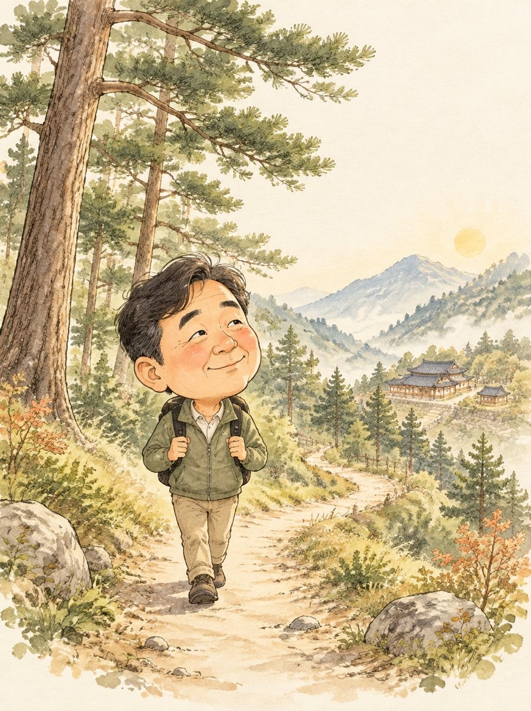
1부 길 위에서
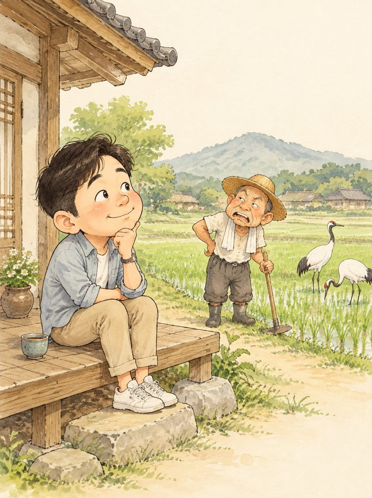
떠나 봐야...
정신없이 바뀌고 또 바뀌는 신호등처럼 이리 저리 정신없이 나는 바꾸며 신호등 바뀌듯 나를 바꿔가 면 살다가 정신없는 도심 떠나면 뭔가 보이겠지 했건만
낮에 만난 산 속에서 평생을 살아온 농사꾼 입에서 육두문자 이사 온 놈 나쁜 놈 농사 일 힘들어 못해먹겠다 도로가 끝까지 나서 좋아 졌다. 흰 두루미, 재두루미, 오리들이 농사에는 독약이라 불평하는 소리를 들으니
한 곳에 오래 있으니 안 보이나 보다 생각했다.
도심 속에서 잠시 떠나서 보고 산 속에서 떠나 도심 속에서 보고 그래야 보이나 보다. 나는 잠시 떠나 있다. 뭔가 보이겠지?
2011년 6월 11일(토) 필그림 하우스의 Terrace of Kenosis(비움의 테라스)에서
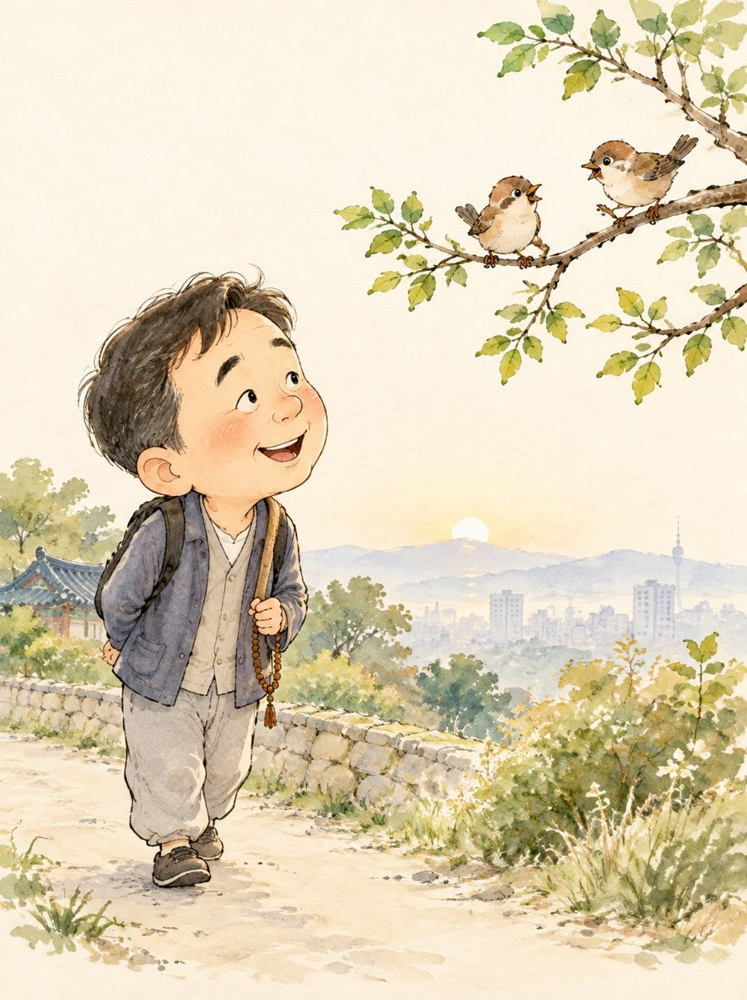
새벽 길
새벽기도 가는 중 맑은 공기 먹으러 비움의 테라스에 들렀네 이름 모를 새 한 쌍 사랑 나누네 남편 새 나무 오르면 부인 새 따라 오르네 남편 새 나무 옮기면 부인 새 따라 옮기네 뭐 그리 좋길래 붙어 다니나 내가 물었다 니들은 왜 그리 붙어 다니노 새들이 합창을 한다 우리는 부부니까 좋아서도 이겠지만 부부 한 몸이니 저절로 붙어 다니네 자연 만물 모두 모두 한 쌍씩 붙어 사는데 사랑하는 우리 성도 00이 엄마 한 몸이 두 몸되었으니 얼마나 힘들까 주~~~~~~~~~~~님! 00엄마 신랑되어 꼭 붙어 계셔 주실거죠.
2011년 6월 14일(화)
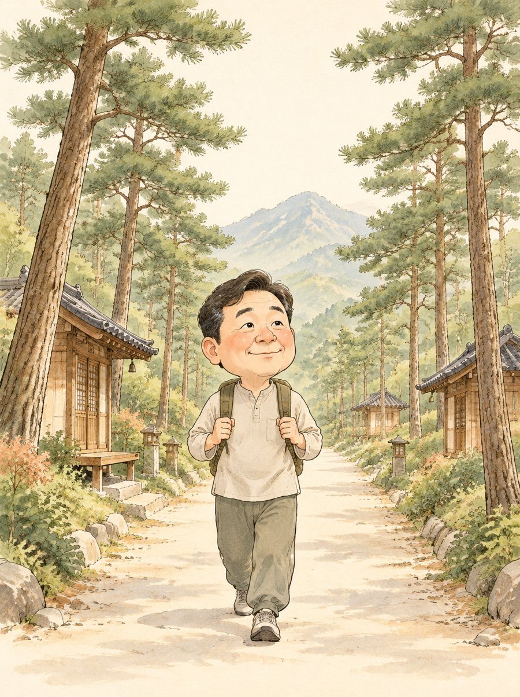
곶은 길
소나무가 줄을 섰네 그 가운데로 곶은 길 있네 나 곶은 길 갈 수 있을까?
곶은 길 좌우에 기도처 있네 좌편 기도처엔 기도 대장 나 위해 기도하고 있네 우편 기도처엔 기도 부대장 교회위해 기도 하네 온 성도 나와 교회 위해 기도하는데 내 어찌 곶은 길 못 가리
나 곧은 목회 길 얼마든지 갈 수 있네
2011년 6월 23일(목)
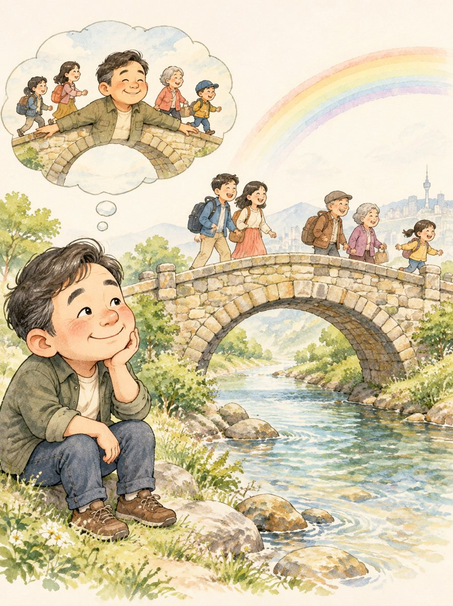
행복 다리
아름다운 다리 너 건장하니 이도 저도 편안하게 건너네 너 아름다우니 건너는 사람 모두 행복하네
내 인생도 저런 곳으로 건너야 하는데 내가 건너야 할 디딤돌도 저런 아름다웠으면 좋겠네
나 구름이 되리 튼튼한 주추 돌 되리 건너고 싶은 무지개 되어 모두가 꼭 가야할 그 곳으로 인도하는 나 행복 다리가 되리
2011년 6월 28일(화)
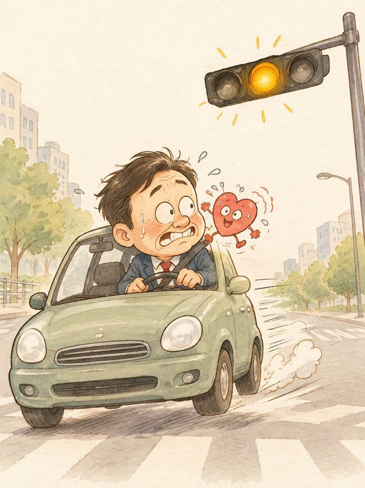
신호등
집을 나서면 만나는 신호등 노오란 등 서라하건만 급한 마음 내 달리네 실선에 차선 바꾸고 한 적한 곳 신호 무시 급정거 정지선 넘고 표지판 60km/h, 내차는 80km/h
건강의 빨간 신호등 무시하니 몸상하고 인관관계 새치기 사람들 상처주고 생활의 정지선 넘으니 충돌인생 삶의 속도 빠른 만큼 심장 박동 급상승 차도 신호 지키면 안전한 이동의 보물 인생도 자연 법칙 준수하면 행복의 보고
2011년 9월 29일(목)
세무서의 일보러 가다가 나도 모르게 이런 저런 교통법규를 무시하고 가고 있는 모습을 보면서 내 인생도 자연의 건강과 행복의 법칙이 있으니 여유롭게 잘 지켜나가면 더 건강하고 행복하리라는 생각에 적어 보았다.
천천히 살아보니 절친(切親)과 어깨동무 부족한 그대 함께 가고 잘난 이 앞세우고 너도 나도 영웅(英雄)되니 내 발 동무 생겼네 행복한 천천히 걷기
2012년 1월 24일(화)
2012년 1월 11일(목) 사랑의 교회 수양관(안성)에서 기도 중에 걸으면서 느낌을 적었다.
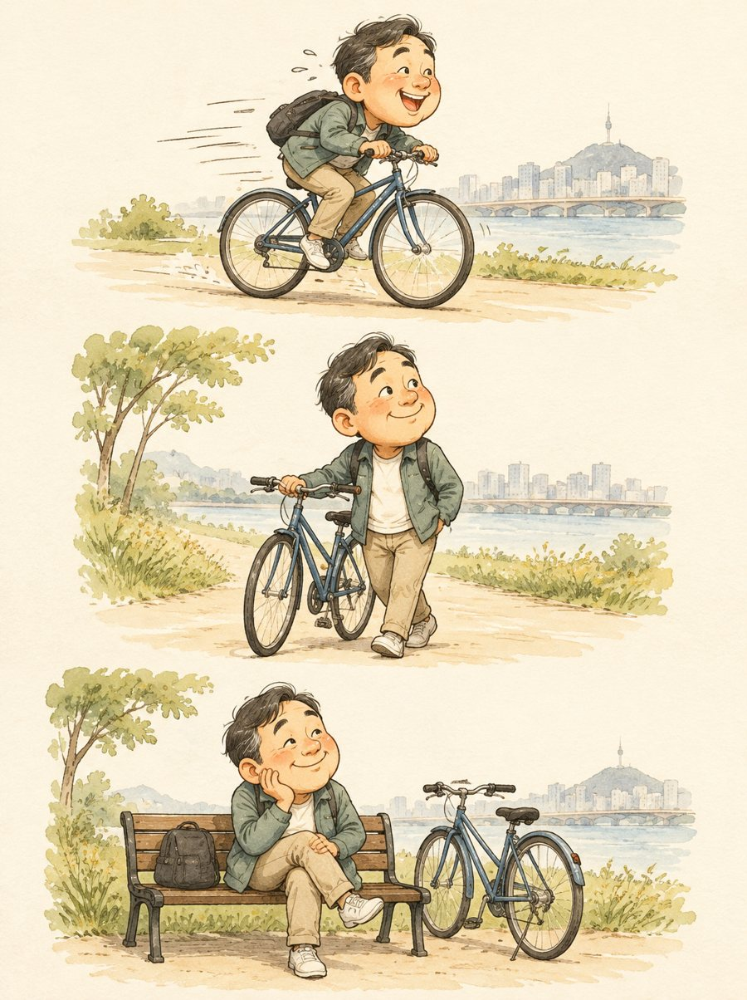
자전거
달리는 자전가 패달을 굴려야 간다 빠르게 밟아야 속도가 나고 빨리 도착 한다
끌고 가는 자전거 내린다 끌고 간다 천천히 간다 생각한다
세워 놓은 자전거 자전거에서 내린다 세워 놓는다 쉰다 사색을 한다
세워져 있는 자전거 앉아 쉬는 이 생각하는 사람 행복한 자전거
2012년 4월 4일(수) 전에 집 앞 산책로를 자전거로 타고 씽씽 달리다 힘이 들어 내려서 걸으면서 자전거를 늘 타는 것으로만 생각하다가 내려서 끌고 가거나, 세워놓고 생각을 하면 더 좋은 것을 알았다. 우리네 인생도 무조건 타고 빨리만 가려고 할게 아니라 내려서 쉬고, 생각하고, 느끼면 더 좋겠다는 생각에 적어 보았다.
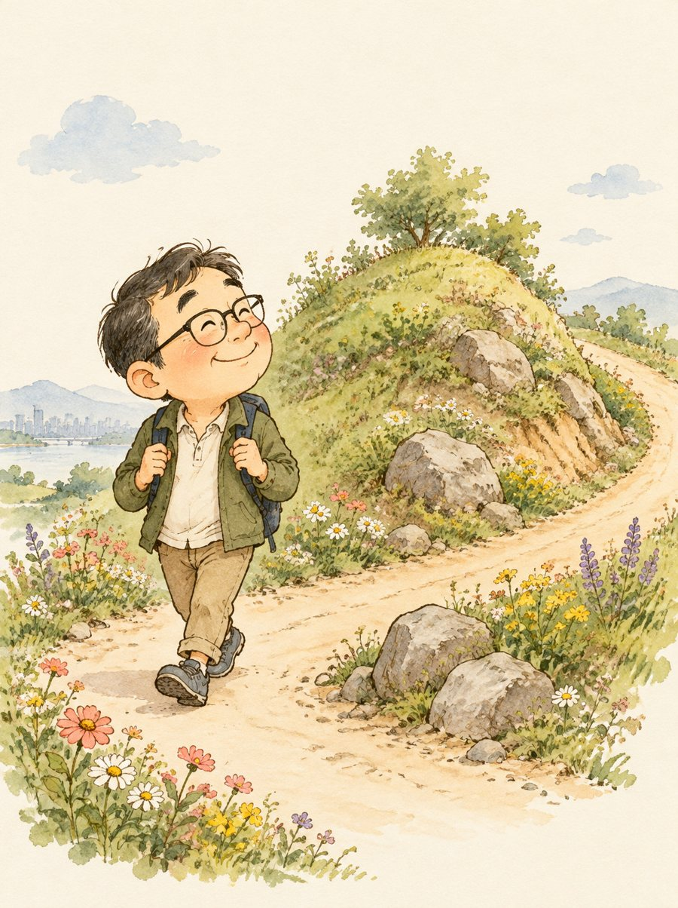
돌아가는 길
돌아가니 자연스럽다 돌아가는 길에 생각하게 하누나 돌아서 가니 구경도 하네 돌고 도니 도는 이유를 아네 돌아가는 길엔 흙도 돌도 밟히네 돌고 도는 인생 그 곳에 행복 있었네 나는 돌아가는 길이 좋다
광은기도원 산책로에서 돌아가는 길을 걸으면서 돌아가는 길이 아름다움을 적어보았다.
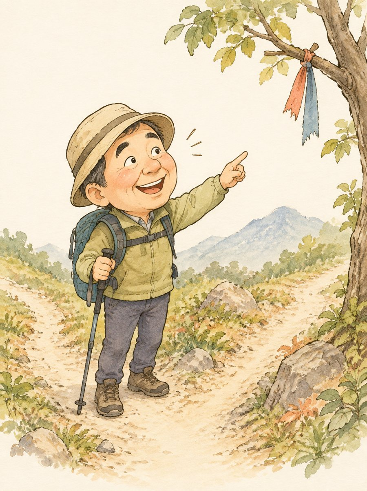
한 조각 천
갈려지고 찢겨지고 버려진 천 한 조각
나무 가지에 매어 놓으니 갈림길 지름길 생명문
한 조각의 천 같은 내 인생 십자가에 매달아 행복 길 천국 길 영생 줄 되리
2013년 2월 20일(수) 광은기도원에서 등산객이 갈래길 표시로 해 놓은 천 한 조각을 보면서 적어 보았다.
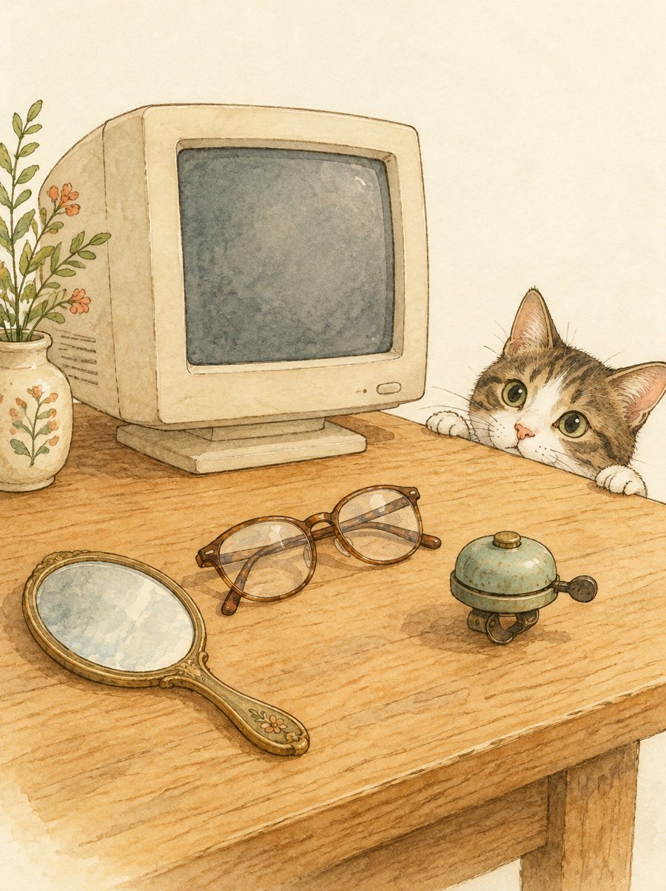
2부 작은 것들의 가르침
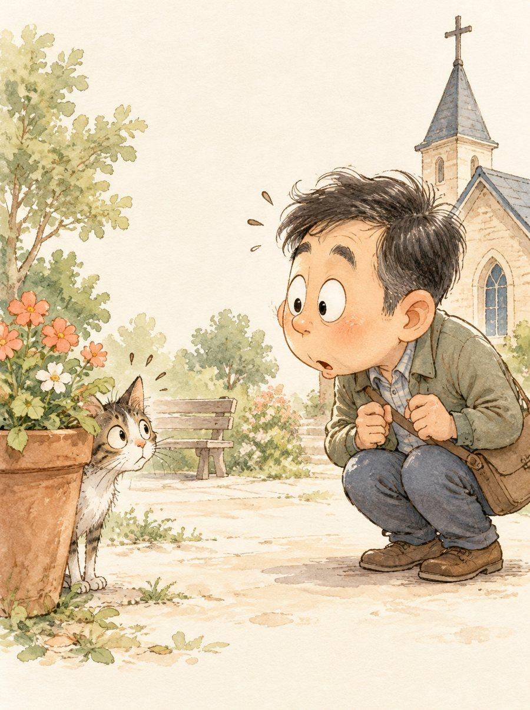
도둑고양이
만날 때마다 눈치 보는 고양이 경계하는 고양이 때문에 내가 더 놀라네 왜 도둑고양이는 늘 긴장하는 걸까 알고 보니 주인 없어 외롭다 집도 없어 처량하다 의지할 것 없는 그 측은하다
만나면 긴장하는 친구 왜 늘 경계하는 것일까? 하나님 사랑 못 받은 사람 본향 없이 떠도는 영혼 주님 없이 고독하다 모든 것이 두렵다 주님 없는 삶은 아프다 주님께 한 걸음만 디디면 좋으련만....
2011년 7월 14일(목)
본인의 교회 마당에서 돌아다니며 눈치보는 도둑고양이를 보고 적었다.
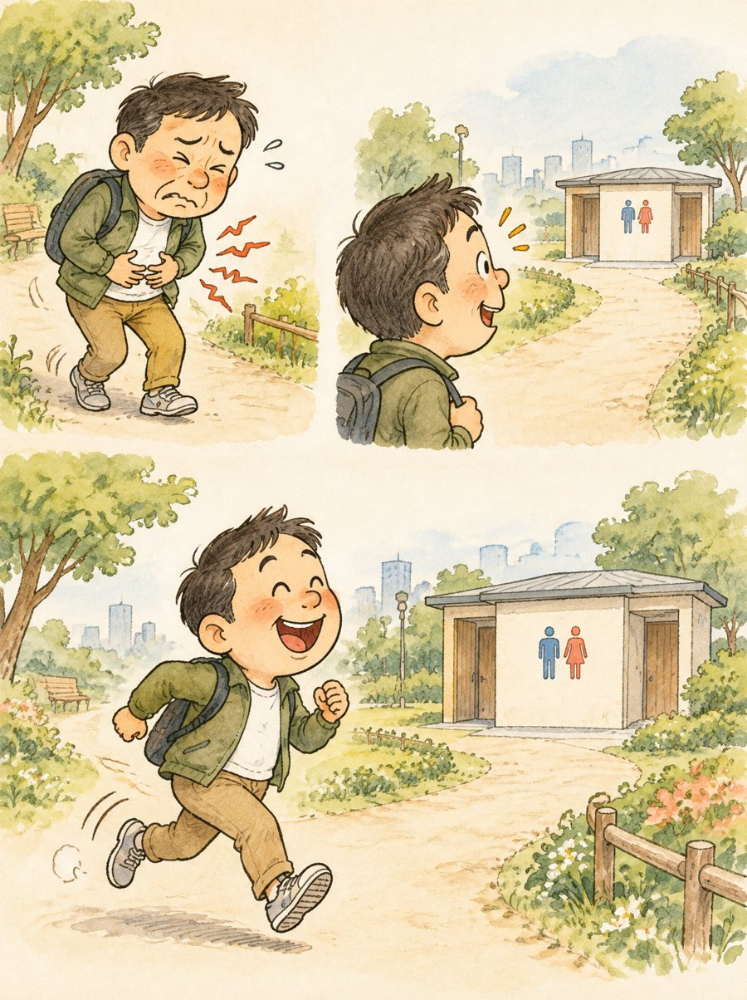
화장실
산책길에 나서 기분 좋은 발걸음 얼마 못가 갑작스레 배가 아파오네 급한 마음 온갖 해결책 강구하나 마음만 급하고 속수무책 멀리 보이는 남녀 한 쌍 나란히 서있는 표지판 얼마나 반가운지 껴안아 주고 싶네
편안히 앉아 배설물 내려 보내니 깊은 산 속 신선이 부럽지 않네 높은 자리, 회장 자리 못지 않은 화장실 자리 고마운 화장실 급한 내 속 사정 잘도 받아주네 온갖 더러운 오물 다 받아주네 사람들의 상처, 울분, 불안, 두려움 다 받아내고 버려주는 고마운 화장실처럼 그런 사람이 되어주면 얼마나 좋을까?
2011년 7월 14일(목)
집 앞 산책로를 갔다가 갑자기 배가 아파 화장식이 급한 마음에 당황하면서 근처에 화장실이 있어서 얼마나 다행이며, 고마운지 화장실에 고마운 마음과 우리 주변의 화장실처럼 모든 것을 다 받아주는 아름다운 사람을 연상해 보았다.
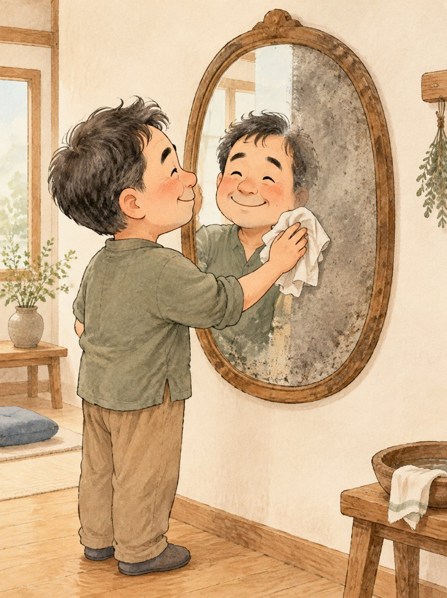
거울
거울에 이 물질의 흔적 가득 닦아내고 싶다 내 것도 아닌데 뭘... 그러나 생각해 본다 거울은 다 내 것이다 나를 비춰주고 보게 하고 알게 하니 이 세상의 모든 거울은 다 내것이다
먼지 묻어 뿌연 거울 불에 구어져 구부러진 신세 세파에 깨진 놈 이제껏 이 거울이 나를 비췄다니 그 모습으로 나를 알고 있었다니 비통하다
나만의 거울을 가지리 깨지지 않은 것으로 어디를 가든 잃어버리지 않으리 매일 매일 깨끗이 닦으리 잘 볼 수 있게...
2012년 3월 28일(수) 광은기도원의 거울을 보며 적어 보았다.
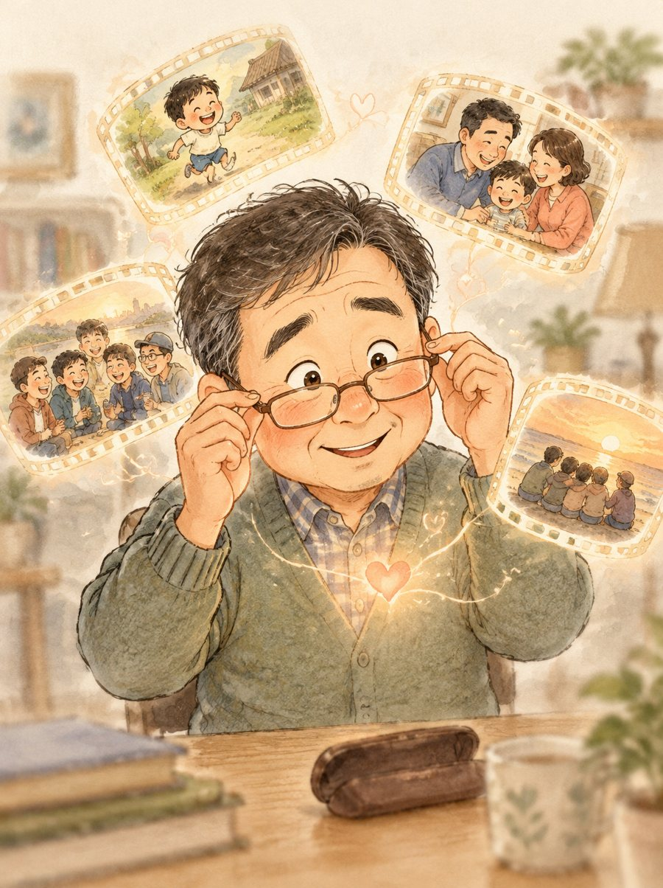
선물
손해 날까봐 주는 대로 빼먹지 않고 받아 먹은 나이 나이를 먹었는데 눈이 무겁고 늙음의 상표 노안을 얼굴에 붙였다 나이 많이 먹었다고 돋보기를 선물 받아 들고 묵직한 안경알이 심신을 누른다
세상이 뿌였고 모든 것에 아지랑이 피고 창문에 가려진 눈이 신경질을 낸다 그런데 안 보이던 것이 보이고 땅 속이 보이고 마음 속의 아픔이 저미어 오고 옛 추억의 필름이 돌아간다
사람 속 잠수 여행을 떠나니 또렷이 보지 못하던 풍경이 펼쳐지고 못 듣던 소리 들리니 음악가가 되고 쓰지 못하던 글이 나오니 시인이 된다
보지 못하는 것이 생기니 이렇게 좋은 것을 나이 쉰이 되어 돋보기를 받아들었다 세상 속을 볼 수 있는 선물을...
2012년 2월 23일(목) 광은 기도원에서 책을 읽다가 눈이 점점 침침하여져서 눈의 피로를 풀기 위해 산책을 하다가 떠올라 적어 보았다.
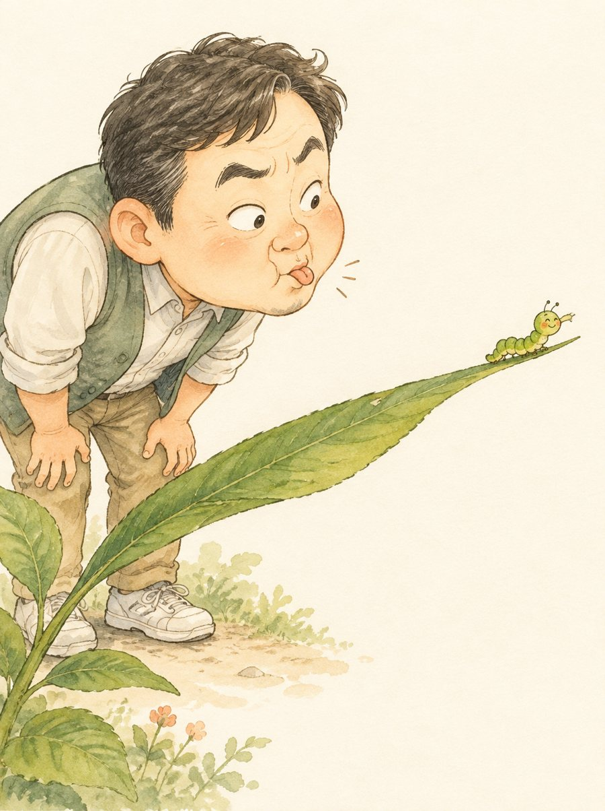
비로소
뒤에서 밀고 앞에서 당기고 땀방울 비직비직 애써 가본들 한 걸음
저래가지고 언제가노 애닯기만 하여라
안스러워 혀 차는 나 도리어 니가 뭘 아노 핀잔 주는 애벌래
애처로이 한탄하고 비소짓는 사이 열 걸음 한눈, 딴전, 한탄 사이에 벌써 자기 도착한 성공 DNA무장된 애벌래 촌음일가 일일 일보 티끌모아 태산 오늘도 한 발 내딛게 하는 나의 스승 애벌래
2012년 10월 10일(수) 지음
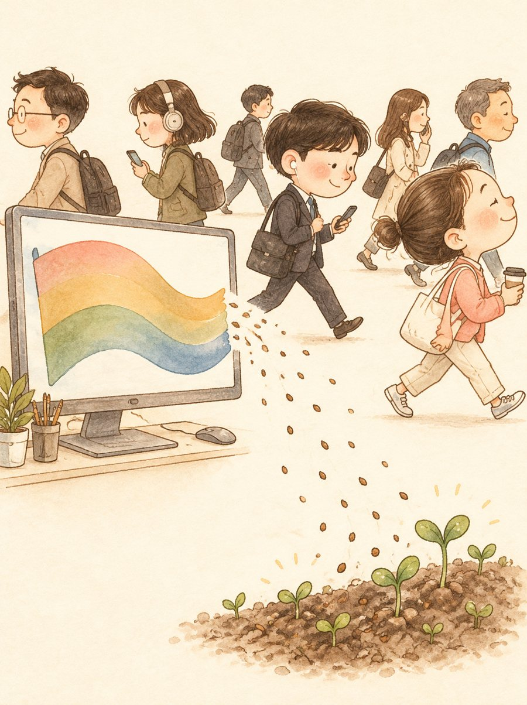
배너 광고
보이지도 않고 혹시 보여도 무시하고 쓸 데 없어 로 사라지는 불쌍한 배너 광고
한 번 띄고 두 번 보여 지고 자꾸 눈에 밟히면 뇌에 저절로 새겨지듯
들어주지 않고 보아도 외면 받고 쓸 데 없이 여겨 버림받음 전도자들이여! 이미 뿌려졌느니라 구원의 씨앗
2013년 2월 20일(수) 광은기도원에서 컴퓨터에 배너 광고를 보면서 적어 보았다.
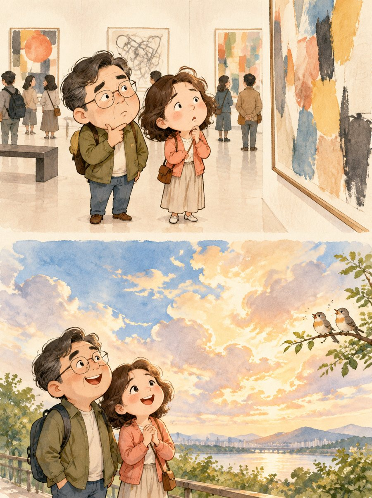
미술관
현대 미술 100선 보러 밀고 밀리는 차량 행렬 뚫고 메퀘한 매연 마셔대며 늘어선 인간의 바다를 헤쳐 한 그림 한 작가의 생애 되 새기네
돌아오다 하늘 보니 한 폭 명화 째잭째잭 이름 모를 새 음악 치료사 온 가족 느긋한 식사 행복의 무릉도원 따스한 위로의 말 무뎌진 행복감각 시간 속에 그득한 속 내음 폭폭 솟아나는 삶의 향기 시간의 향기
2013년 12월 6일(금) 아내와 함께 현대미술대전 100선을 보고 적어 보았다.
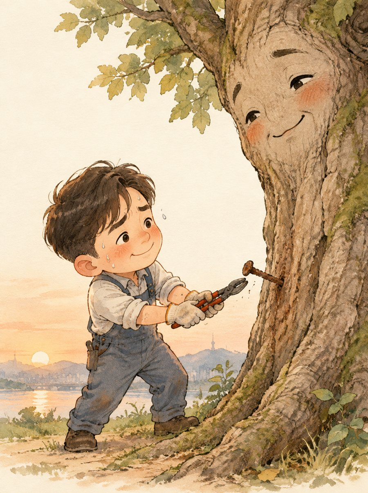
아픈 사랑
해는 뉘엿뉘엿 옅은 어둠 대지 덮었거늘 착한 총각 못 박힌 나무 치료하려 수술 칼 들이대고 진땀
박힌 못 너무 깊고 헤어지지 않으려 몸부림 머리까지 내던지고 나무와 합일
못 빼내려다 나무 상할라 그냥 두어라 못과 함께 살게나 상처 많으니 사연도 많으리 박경리 선생 생각하며 큰 나무 되거라 단 열매 맺거라
2014년 1월 8일(수) 명성수양관에서 저녁을 먹고 숙소로 가던 중 수양관직원이 나무에 박힌 못을 빼주려고 애쓰는 모습을 보고 나서 다음 날 아침 적어 보았다.
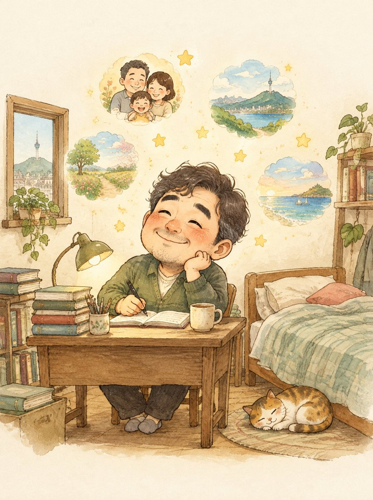
방의 예찬
그리 좁은 것이 어찌 우주를 담고 있는가 초라하기 그리 없지만 고귀한 품격이 길러지는 곳 갖춘 것 없어도 활력의 충전소 연구재료 없어도 걸작품 제작소 아무도 봐주지 않는 곳이나 세계가 주목하는 꿈 터 고독하게 홀로 있으나 모두를 사랑하는 사랑 터 어떤 피곤도 씻어내는 세곤실 어떤 모습으로 돌아와도 반겨주는 곳 사랑하는 이의 배신의 피신처 누구의 허락 없이도 갈 수 있는 곳 그곳엔 꿈, 쉼, 잠, 창작, 사랑이 활개친다 오늘도 고마운 그놈이 나를 기다린다 방이 있다 삶이 있다 내가 있다 그 곳에 내가 없으면 그 것이 없다 내 안에 그것이 없으면 그 곳이 아니다 나는 그곳이고, 그 곳이 나다
광은기도원에서 2013년 1월 10일(목) 방을 우연히 카메라로 비춰보다가 방이 참 좋은 곳이라는 생각이 들어 적어 보았다. 우리 모두에게 “내”방이 필요한 것 같다.
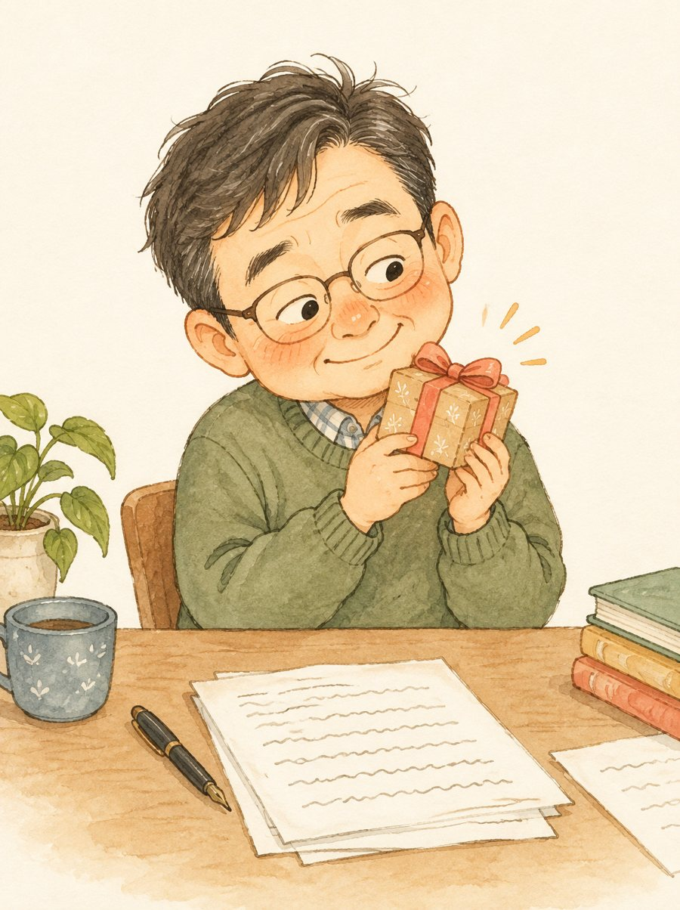
선물(膳物)
나는 글을 쓴다 아무도 알아주지 않으면 어떻하나 그래도 자꾸 써진다 다시 읽어보면 지워버리고 싶다 어떨 때는 고개가 끄덕여진다 종잡을 수 없다
어느 날 이걸 보고 용기가 나네 “나에게 선물하기” 이왕이면 “나에게 선물하기”로 구매 기쁨 두 배, 행복 네 배 오늘부터 쓰는 시는 “나에게 하는 선물 시”다 혹시 몇몇 님들께 선물 될 날 기대하면서
2013년 2월 15일(금) 광은기도원에서 시를 쓰면서 자신 없어 하는 나에게 용기를 불어 넣어 주었다.
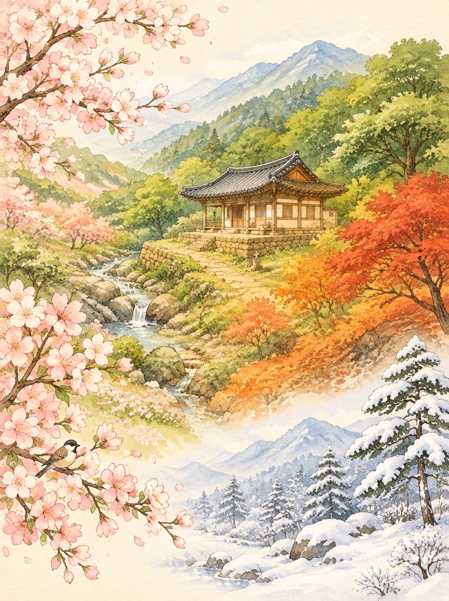
3부 계절이 가르쳐 준 것
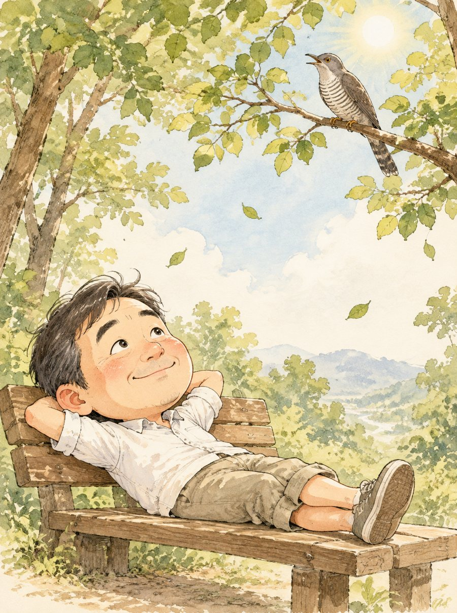
벤치에 누워
일상을 떠나 산 속 벤치에 누워 산들 신선 바람 맞는다 흔들리는 나뭇잎들 살아있는 그림 뻐꾸기도 나를 반겨 우누나 한 숨 들이키니 깊은 폐 속 클린 이파리 사이로 보이는 고도의 하늘 내 눈 찌르듯 쏟아내는 격앙된 태양 빛
회상의 자리에 앉아 비몽사몽 눈을 떠 지난 날 리마인드 가정사, 직장일, 경제 건강 걱정 내 눈 어리누나 귓전 메아리 아내의 위로 생각 의자에 감도는 소망의 감운 문제의 숲 거두고 보는 희망의 바다 어느새 내 영혼은 승리의 찬가
2012년 6월6일(수) 광은기도원 숲속 설교 영감을 받고 난 후 벤치에 누워 나뭇잎 사이로 보이는 하늘과 태양을 보면서 적어 보았다.
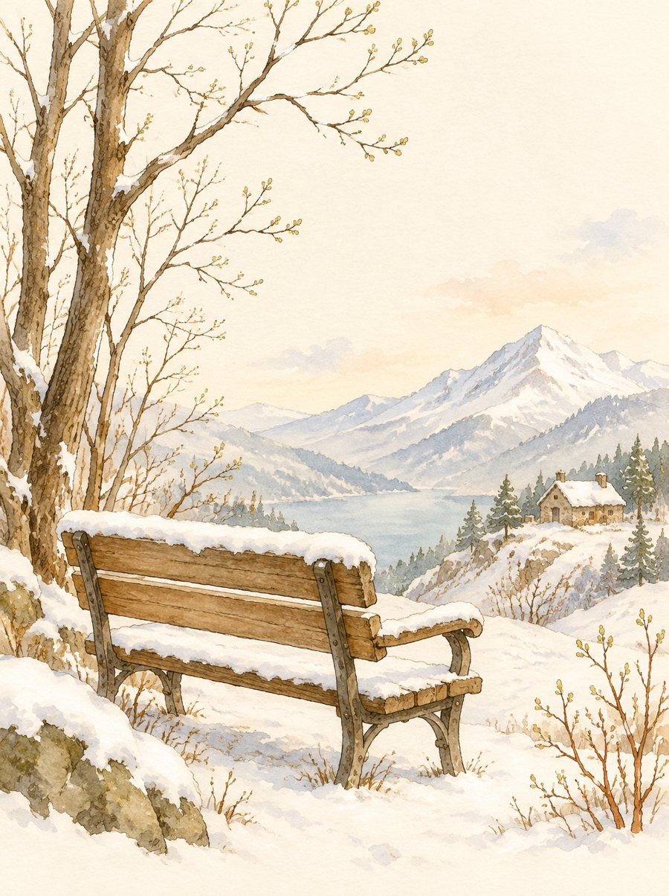
겨울 벤치
한 겨울의 벤치 한파 속 눈 위에 누운 멍청한 놈 아무도 앉아 주지 않는 미련한 놈 봄이면 돌아올 분 기다리는 우직한 놈 눈 녹을 걸 아는 똑똑한 놈 기다리면 쓸모 있을 걸 아는 현명한 놈 끝까지 참아내 그대를 모시는 현숙한 놈
칼바람 견뎌내고 외로움 이겨내고 버려짐 극복하고 임을 모시리 용기 내는 자리 낙심 털어내는 자리 한 쌍 사랑의 회복 자리
2013년 2월 20일(수) 광은 기도원에서 겨울 벤치를 보면서 적어 보았다.
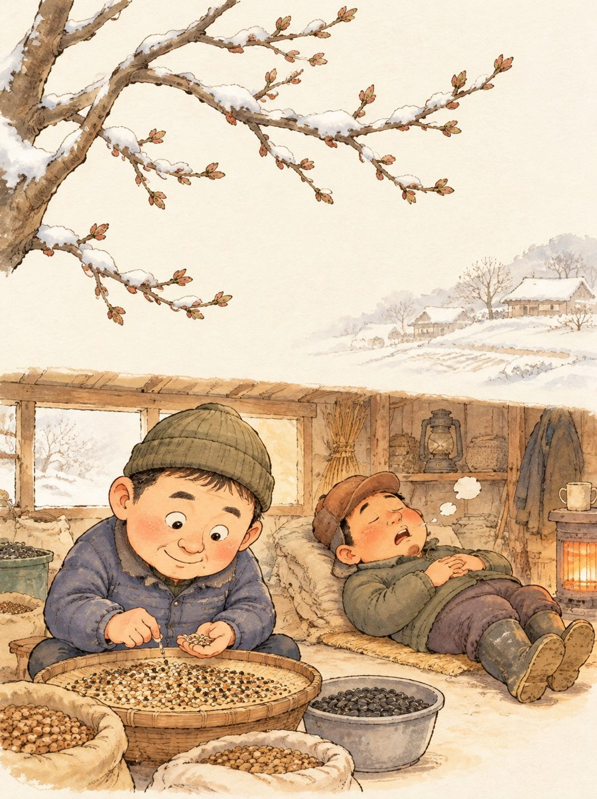
준비
한 겨울 눈 밭에 씨눈 방울이 맺혔습니다 몸에 틔울 씨를 준비했나 봅니다 나무는 봄을 겨울에 준비했습니다 봄은 몸에 준비하는 게 아닌가 봅니다
게으른 농부는 봄에 걸음을 찾아 나섭니다 똑똑하지 못한 수험생은 닥쳐야 책을 펼칩니다 미련한 청년은 적령기가 돼서야 배우자를 찾습니다 미숙한 성도는 죽을 때 “~껄”합니다
부지런한 농부는 겨울에 씨를 준비합니다 지혜로운 학생은 평소에 시험을 준비합니다 명철한 사람은 젊을 때 인생 전반을 대비합니다 슬기로운 신앙인은 살았을 때 다음 세상을 예비합니다
2013년 2월 15일(금) 광은기도원에서 한 겨울에 씨눈을 준비한 겨울 나무를 보며 적어 보았다.
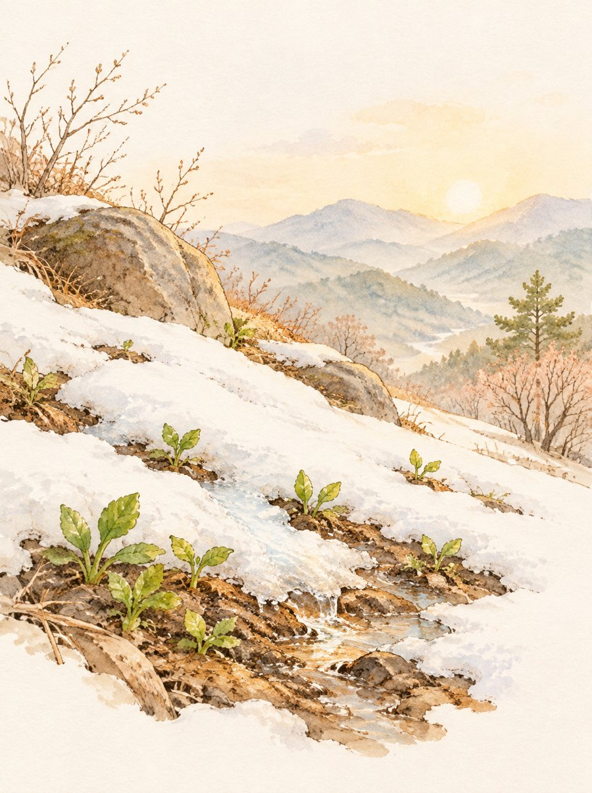
눈으로 와 주세요
물 비로 말고 눈으로 와 주세요 그래야 조금씩 깊이 받을 수 있어요 비로 오면 다 흘러 가잖아요 눈으로 와야 한 방울도 놓치지 않아요
물 비로 말고 눈으로 와야 해요 닿을 때 차갑고 괴롭지만 그래야 놓치지 않고 품을 수 있어요 얼음 결정 눈으로 와야 내 살에 스며요
생 넘침 말고 모자람으로 와 주세요 결핍과 씨름하며 괴성 터지겠지만 그래야 내 것이 되어 인생 살찌우는 걸음 되지요 대지 뒤덮은 눈이 가르치네요 과여불급이라고
2013년 2월 13일(수) 눈 덮인 산을 보면서 서서히 녹으면서 대지가 다 흡수하여 봄에 싹틔우는데 유용할 것 같아서 적어 보았다.
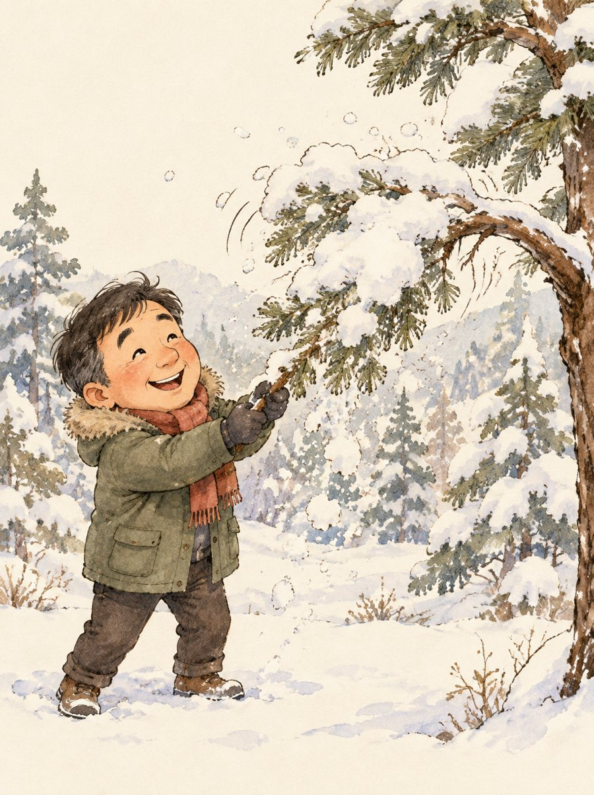
설 송(雪松)
밤사이 눈 손님이 왔다 아주 무거운 눈이 소나무 위에 내려앉고 또 내려앉았다 버거워하는 소나무에 포개졌다 가지는 땅을 딛고 버티고 있다 소나무는 눈 짐 보따리 내려 달라한다 애잔한 맘 내 손 채근하여 눈 짐을 내린다 짐 벗은 소나무 신난 듯 가지 돋세운다 공부 눌림 해방된 수험생 펄쩍 뛰듯 가지 춤 춘다 고마운 인사를 나누고 헤어 진다 멀어질수록 눈 초점 설송(雪松)으로 짐 벗고 파릇 침엽 자랑하는 가지는 지워지고 눈 짐 지고 버거워 신음하는 소나무 주목되니 폭설 다 어깨에 지고 버텨내는 송림은 풍경을 너머 절경 세상 짐 지고 가는 설송(雪松)은 가송(佳松)이리라
2013년 2월 6일(수) 광은기도원에서 함박눈을 맞고 힘겨워하는 소나무를 보면서 적어 보았다.
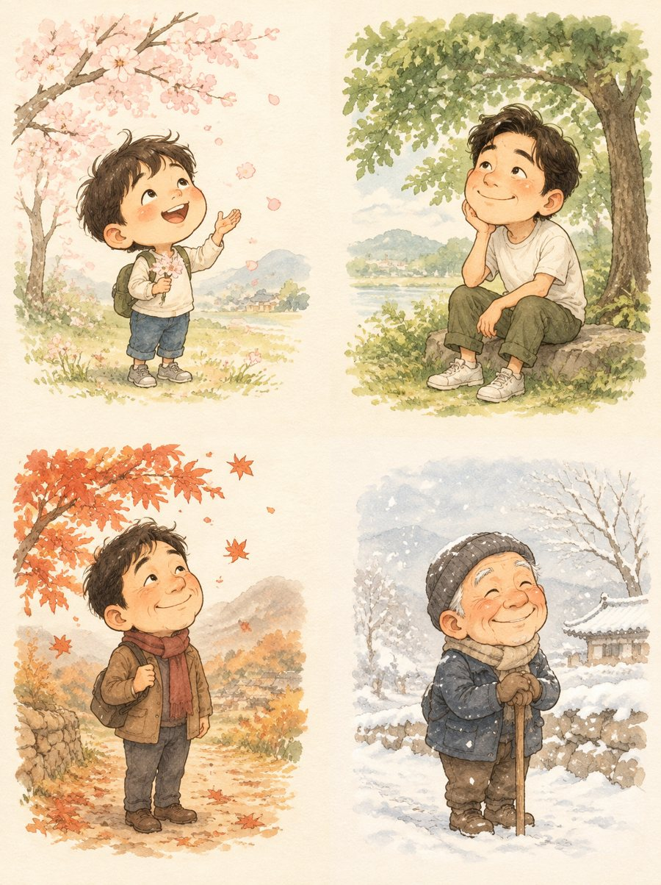
이라서
호두 껍질 동토 녹여 생명 주머니 만드는 살포시 사랑 생명의 시작 봄 생의 소년 봄이라서 좋다
용광로 속 철을 녹이듯 땅을 허물어 생명을 분출케 하고 과여불급(過如不及) 몸에 좋은 대양에너지 넘쳐나 질식케해 신선함 갈구케 하는 여름 생의 청년 여름이라 좋다
높은 하늘 그 너머 뭐가 있을까 열정도 조절되야 생의 열매 맺게 됨을 가르친 선생된 가을 생의 중년 가을이라서 좋다
땅을 얼리듯 세포의 증식 중단 시키고 능력 막다른 골목길 모든 것 막히니 사방의 우겨쌈 그러나 하늘 길 보게하는 겨울 생의 노년 겨울이라서 좋다
2012년 10월 10일(수) 적어 보았다.
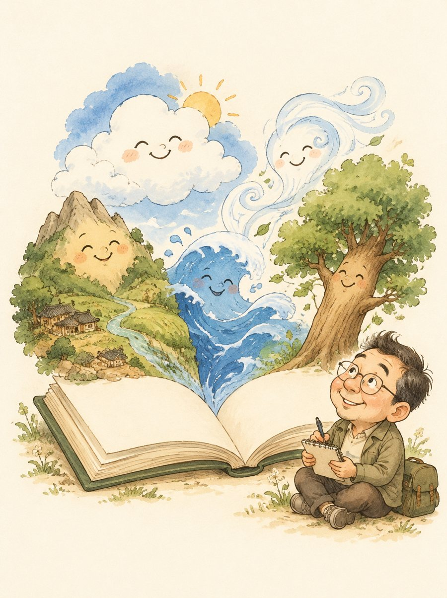
자연(自然)
자연은 교과서
일 단원은 땅 땅은 눌릴수록 다져지고 나무를 받으면 강해지고 씨를 받으면 열매를 거둠을 가르쳐 주는 좋은 선생님
이 단원은 하늘 하늘은 세상의 끝이 없음을 알리고 착함을 올리면 복을 내림을 위를 보면 하늘 길이 열림을 보여주는 그림 선생님
삼 단원은 물 물은 기다리면 이루고 상대에게 맞추면 다 품어내고 넘치게 주면 이기는 지혜를 주는 현자
사 단원은 바람 바람은 보이지 않지만 오고 있으며 힘을 합치면 강해지며 포기하지 않고 가면 바위도 모래로 만드는 실천의 선인
오 단원은 나무 나무는 하늘과 땅을 이어야 살 수 있음을 꽃의 아름다움, 열매의 단맛, 재목, 그루터기 의자까지 주는 기쁨을 죽었지만 다시 사는 것을 가르쳐 주지요
자연은 삶의 지침서 보기만 해도 절로 배우네
2014년 1월 9일(목) 명성수양관 산책 나갔다가 자연을 보면서 참 배울게 너무나 많다는 생각에서 적어 보았다.
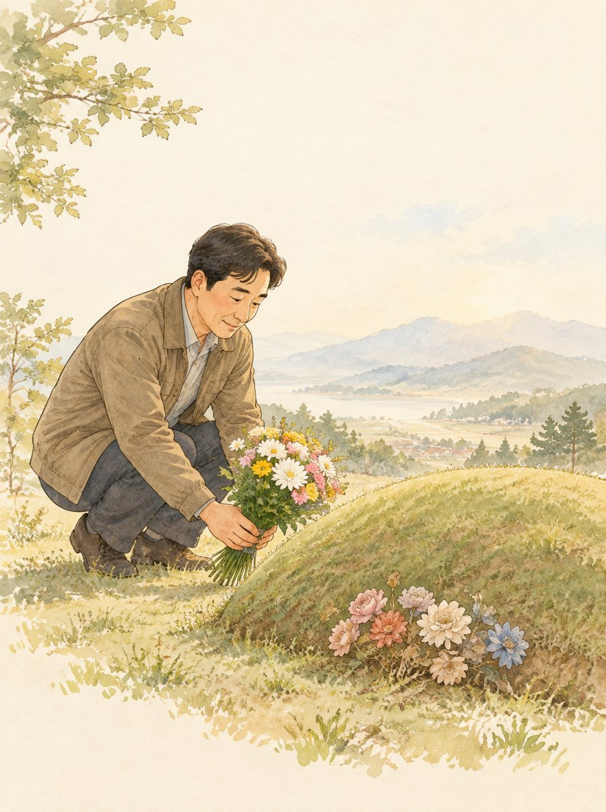
생화(生花)
이름 모를 무덤 한 다발 때 묻은 조화 무덤과 조화? 불협화음 죽었는데 죽지 않고 살았는데 죽었으니 이게 웬 부조화
무덤에 생화를 올려주세요 살았다 죽었으니 무덤 앞에서 피었다가 질 수 있는 생화를 올려주오 무엇이든 누구든 갈 수 있게 해줘야 하오
2013년 12월 27일(목) 명성수양관에서 아침 산책 중 조화가 올려져 있는 무덤을 보고 지어 보았다.
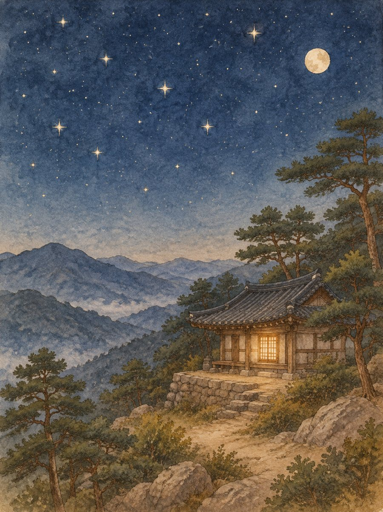
4부 밤하늘 아래
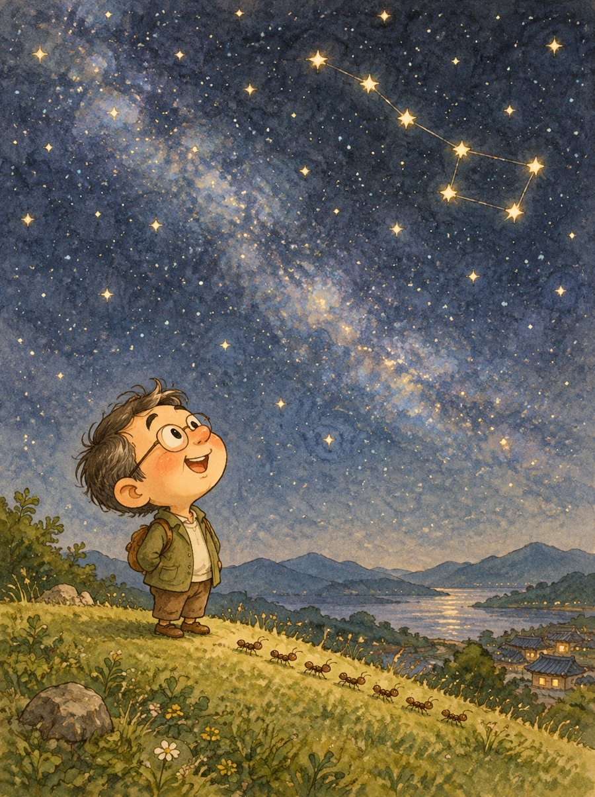
왜?
한 계절 하루 가듯 일 년이 나흘이네 이토록 빠른 세월을 사는 이들 왜 인생이 뭐냐고 묻지 않느냐
새벽별, 북두칠성 시종(始終)이 없는 우주 줄지어 부지런떠는 개미 보며 왜 너 생각해 보지 않느냐
너 작은 인생아 니 뭐 할수 있다 뽐내느뇨 사지 가진 직립동물 평생 부리런 떨며 뭘 할 수 있느뇨 얹혀사는 땅 하나 더 만들꼬 달을 따서 지구 위에 얹어 눈사람 만들고
우주, 별, 지구, 비행기, 너 그 큰 무엇 앞에 겸손하지 않느뇨 내 속에 우주, 우주 속의 나를 만든이 앞에 왜 절하지 않느뇨 내 속의 우주 보니 볼 수 없던 이 우주 속의 내가 보이니 조물주가 내 안에 오셨네
2012년 8월 3일(금) 광은기도원에서 저녁 묵상 중에 밤하늘을 보며 적어 보았다.
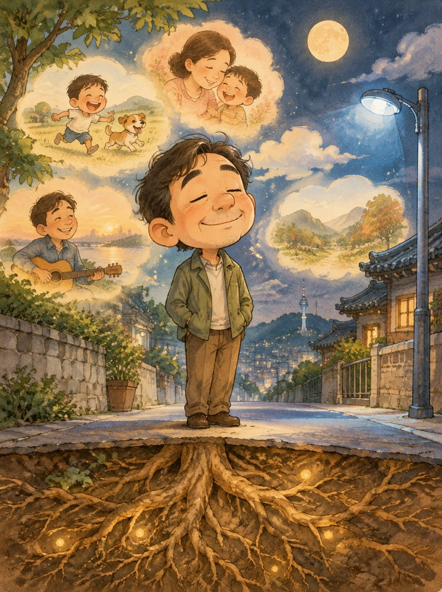
밤의 예찬
밤 하늘의 별 달 빛 아래 침잠한 거리 푸른 빛 가로등 아래 콘크리트 바닥에 비친 파장
밤, 너무 밝아 볼 수 없고 너무 가까워 같이 있을 수 없고 너무 많아 쓸 수 없고 너무 빨라 함께 할 수 없네
어둠, 빛으로 볼 수 없고 어두니 보이네 눈을 뜨면 안 보이고 눈 감으면 보이네
닫힌 눈, 눈을 감고 보세요 나의 뿌리 물속 구름 위 마음의 울음도 모두 모두 보이네
어둔 밤, 밤에는 불을 꺼 주세요 어두워야 보이네 나도, 너도, 그도, 맘도, 생각도, 느낌도
밤의 불, 혼의 암흑 불 꺼진 밤 영혼의 향연 밤에는 불을 꺼주세요 나와 너의 심연을 볼 수 있게 너와 그를 온통 안을 수 있게
2014년 1월 7일(화) 명성수양관에서 밤에 묵상이 되어서 사람들의 마음을 볼 수 있고, 시도 잘 지어져 적어 보았다.
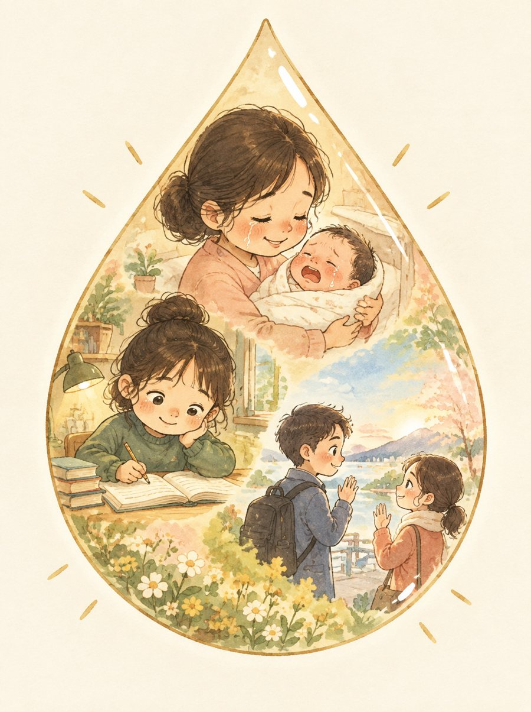
눈의 물
갓 난 아이의 신호탄 눈물 엄마와 생이별 아가의 청천벽력 눈물 생애 첫 걸음 실패를 맛본 수험생 낙수 죽기보다 더 힘은 헤어짐 사선에서 흘리는 통분 미운 정 고운 정 다 들어 먼저 보내는 중년의 끈끈한 점액질 눈물의 종류도 많건만 눈물 무슨 에너지가 있을까
연극 배우 가짜 눈물도 가슴을 적시니 수돗물 흐르듯 한 눈물 소용없건만 눈에서 흐르는 한 방울의 감동 성분으로 치면 별반 다름없음 눈의 물은 치료, 감격, 회복, 생명 모든 사람을 담은 눈이기에 온 우주를 비추는 빛이기에 눈의 물은 생명 물
눈물을 흘려 보았는가 까닭모를 눈의 물을 쏟아 보았는가 이유 없는 눈물을 머금어 보았는가 눈물로 버무려진 인생 사람 속 생명의 터치 오늘도 눈가엔 기쁨의 골짜기 패이고 골짜기 따라 행복의 시내가 흐르고 이내 생명의 강 되어 환희의 바다
2013년 2월 28일(목) 광은기도원에서 눈물을 쏟으며 적어 보았다.
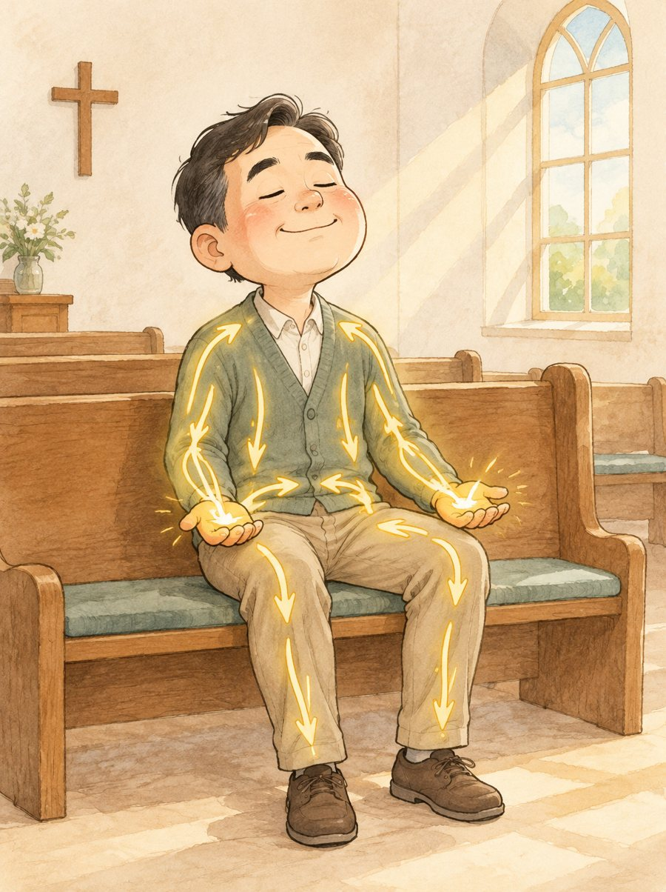
힘
힘 손이 아니라 팔에 팔이 아니라 어깨에 어깨가 아니라 허리에 허리가 아니라 다리에 그 힘의 시작됨을 알았습니다
능력 입이 아니라 지식에 지식이 아니라 생각에 생각이 아니라 가슴에 가슴이 아니라 삶에 그 능력 수족에서 시작됨을 알았습니다
2013년 2월 15일(금) 광은기도원에서 새벽기도회 갔다가 아무도 없어(금요 철야 후 새벽기도회가 없는가 보다) 묵상 중에 생각나 적어 보았다.